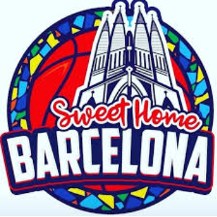
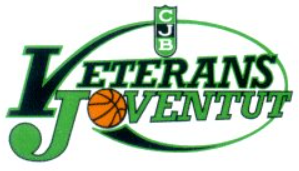
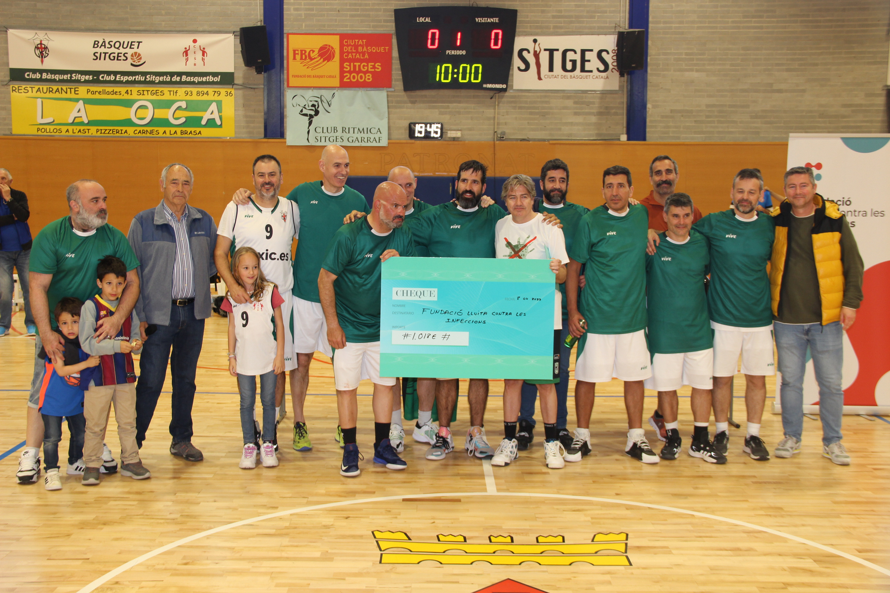
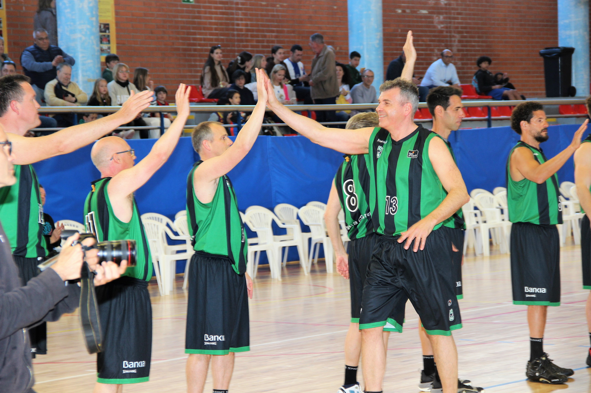
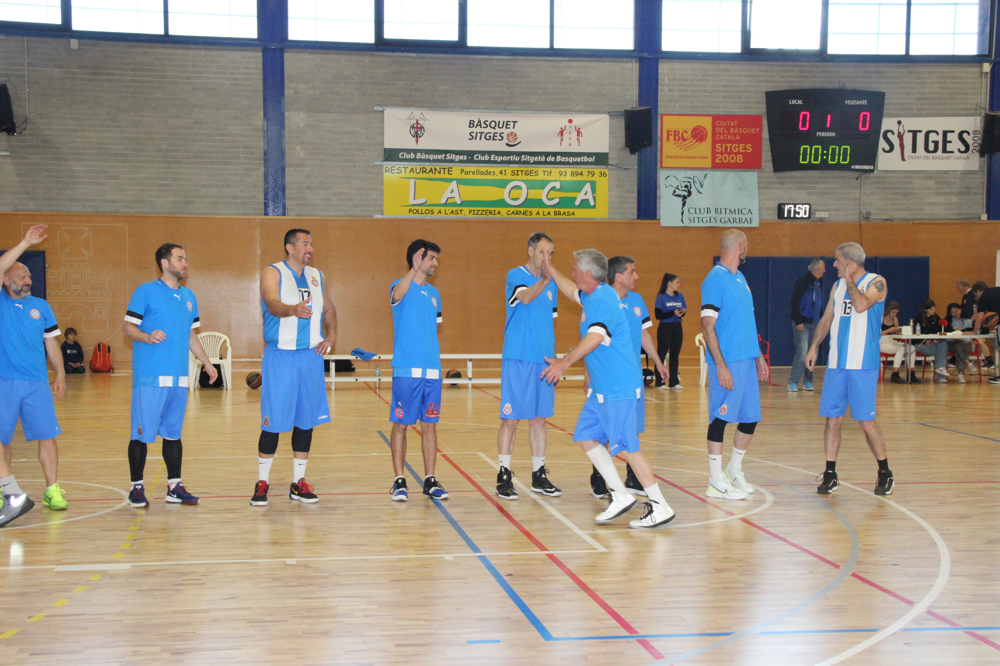
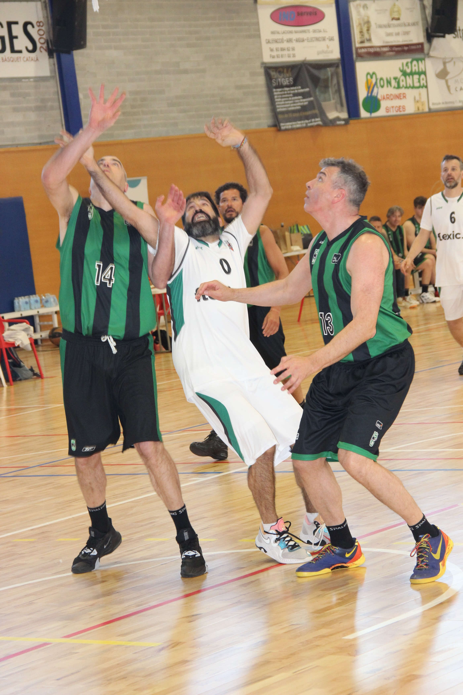
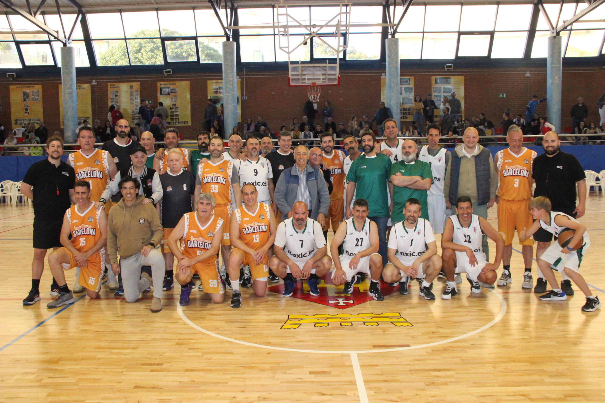
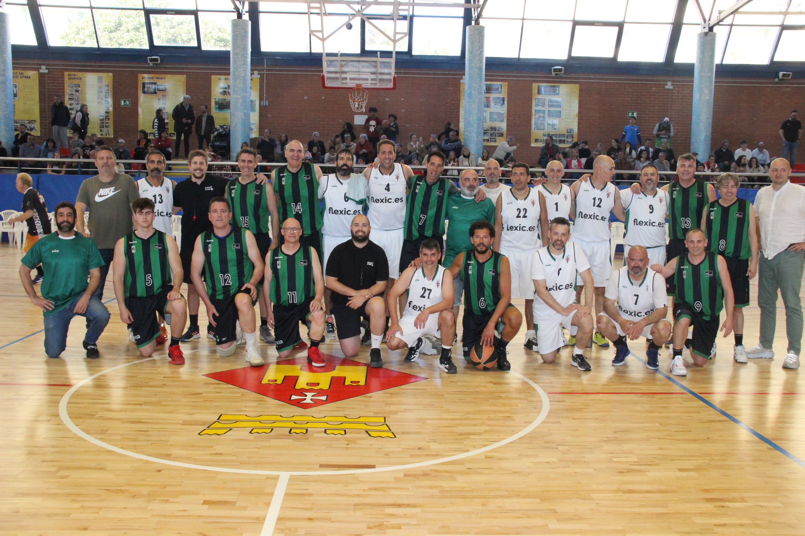

1r Torneig · Abril 2023
El Bàsquet fa Salut
El Bàsquet fa Salut
1.018€
Recaptat
Entitat beneficiària
Fundació #YoMeCorono / Fundació Lluita contra les Infeccions
Causa
Investigació contra la COVID-19, vacunes, tractaments, COVID persistent i vigilància genòmica.
Equips participants
-

Sweet Home Barcelona (ex-jugadors F.C. Barcelona) -

Veterans Joventut Badalona - S.D. Espanyol (Seccions Deportives)
- C.B. Sitges
"Hem de deixar de cometre els mateixos errors. Hem d'invertir per prevenir malalties i ajudar la humanitat a estar un pas per davant."Dr. Buenaventura Clotet
Col·laboradors
Ajuntament de Sitges
La Tratto Sitges
El Racó del Vi
Mammothskate
La Ocasitges
Kela Sitges
Ositsitges
La Sitgetana
India Mon Amour
Xiringuito Blanca Subur
Carnisseria La Plaza
Ilumina
ABC Sitges Castelldefels
Els Jardins del Retiro
Sports Bar Sitges
Sea You Sitges
Ara Selecció Vins
Ferran Sports
Bluemandarines
Pastisseria SN
Daniel Fontdevila
Cal Pinxo Sitges
Calma Sitges
Nou i Clàssic
Cine4you
Celler Diaz
Abwine
Galeria de fotos






Lloc
Pavelló Pins Vens, Sitges
Abril 2023